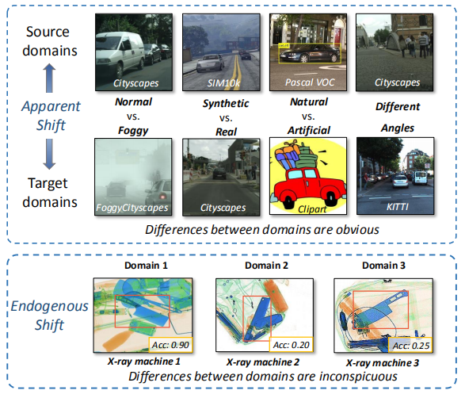
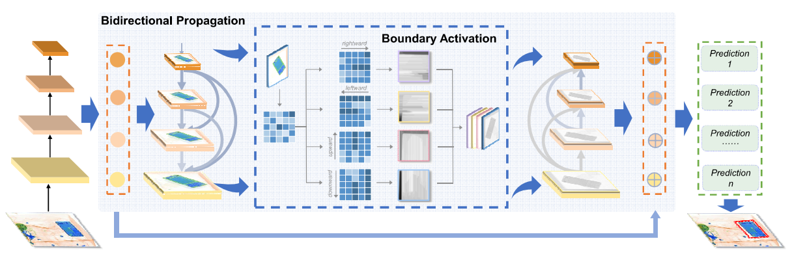
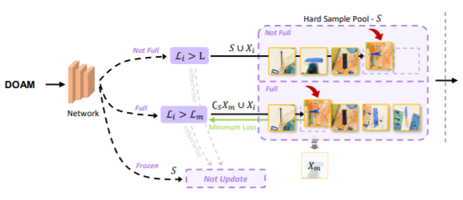
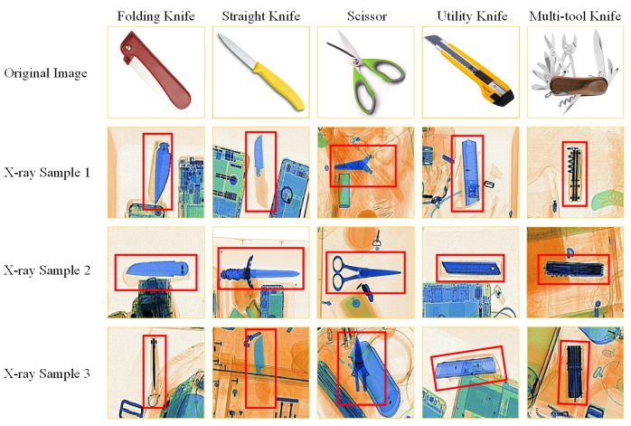

|
Object Detection Under X-ray Security Inspection Scenario
This is the introduction web of the work for Object Detection under X-ray security inspection scenario done by the research group in the State Key Laboratory of Software Development Environment (SKLSDE)
at Beihang University. We hope our work can contribute to the community and encourage more researchers to continue to work in this field.
Our research mainly focuses on:
-
De-occlusion detection
-
Small object detection
-
Domain adaptation
-
Few-shot detection
|
| News
[2022.03.02] Two papers including one first-authored are accepted by CVPR 2022.
[2021.07.23] One first-authored paper for object detection is accepted by ICCV 2021.
[2020.07.26] One co-first-authored oral paper for De-occlusion X-ray Detection is accepted by ACM MM 2020.
|
|  |
Exploring Endogenous Shift for Cross-domain Detection: A Large-scale Benchmark and Perturbation Suppression Network.
[PDF]
Renshuai Tao, Hainan Li, Tianbo Wang, Yanlu Wei, Yifu Ding, Bowei Jin, Hongping Zhi, Xianglong Liu, Aishan Liu.
IEEE/CVF International Conference on Computer Vision and Pattern Recognition(CVPR), CCF-A, 2022
arXiv /
Code
We first put forward a novel and important type of domain shift in cross-domain detection, the endogenous shift, which may cause severe performance drop but has been rarely studied.
|
|  |
Towards Real-world X-ray Security Inspection: A High-Quality Benchmark And Lateral Inhibition Module For Prohibited Items Detection.
[PDF]
Renshuai Tao, Yanlu Wei, Xiangjian Jiang, Hainan Li, Haotong Qin, Jiakai Wang, Yuqing Ma, Libo Zhang, Xianglong Liu.
IEEE International Conference on Computer Vision (ICCV), CCF-A, 2021
arXiv /
Code
We present a High-quality X-ray (HiXray) security inspection image dataset and the Lateral Inhibition Module (LIM).
|
|  |
Over-sampling De-occlusion Attention Network for Prohibited Items Detection in Noisy X-ray Images
[PDF]
Renshuai Tao, Yanlu Wei, Hainan Li, Aishan Liu, Yifu Ding, Haotong Qin, Xianglong Liu.
ArXiv, 2021
arXiv/
Code
To better improve occluded X-ray object detection, we further propose an over-sampling de-occlusion attention network (DOAM-O), which consists of a novel de-occlusion attention module and a new over-sampling training strategy.
|
|  |
Occluded Prohibited Items Detection: An X-ray Security Inspection Benchmark and De-occlusion Attention Module.
[PDF]
Yanlu Wei*, Renshuai Tao*, Zhangjie Wu, Yuqing Ma, Libo Zhang, Xianglong Liu. (* indicates equal contribution)
ACM Multimedia (ACM MM), CCF-A,Oral, 2020
arXiv /
Code
We contribute the first high-quality object detection dataset for security inspection, named Occluded Prohibited Items X-ray (OPIXray) image benchmark.
|
|